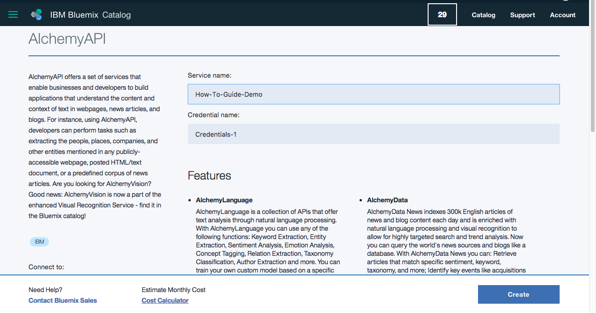
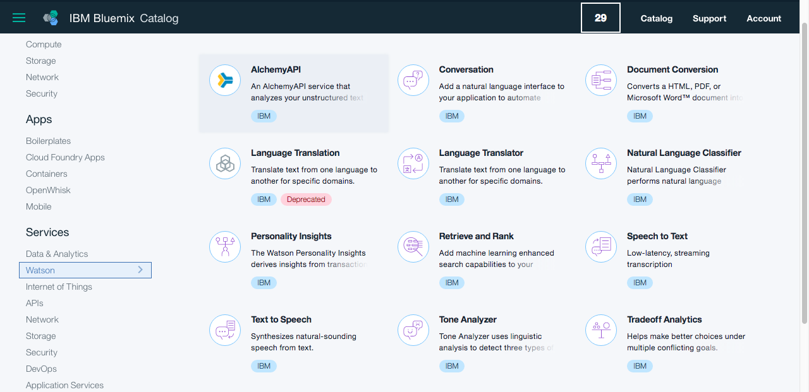
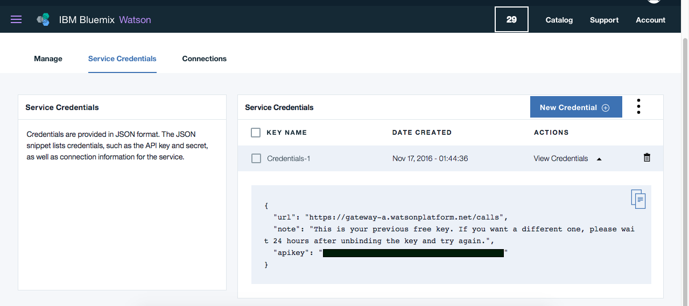

In order to get started using IBM Watson's AlchemyAPI service, we will need to gain a basic understanding of how web API's work.
API stands for Application Programming Interface, and is basically a fancy way of saying “the ability to use someone else’s service (aka: code) to create something on your own site or application.” In our case, we will be using IBM Watson’s AlchemyLanguage service to create our own Sentiment Analysis tool.
For the more technically-inclined, an API allows us to interface with a program by exposing some of its internal functions to us. On the web, this will typically involve sending a request for data on a webpage via HTTP, and getting the requested data sent back in an XML- or JSON-formatted response. In this respect, an API works in much the same way as accessing a web page by entering a URL into your browser (aka: a request) and a web server sending you back content (aka: a response). The primary difference between an ordinary URL and an API URL is that an ordinary URL will render a pretty webpage in your browser, while an API URL will send back not-so-pretty chunks of data. It is these unsightly chunks of data that we are interested in and will be discussing in the Request and Response sections.
To get started using an API, we will need to acquire an API key. An API key is a unique alphanumeric string required in order to prevent unauthorized users from accessing the application’s data. It is the key to unlocking the door that grants authorized users access to the API. We can liken it to a telephone number in such that, when we make a call to an API, the API will either recognize the number or not. Only if it recognizes our number will it accept our call.
Beyond acting as a secret token for authentication, the API key also acts as a unique identifier. Extending the telephone metaphor even further, the API will only accept a limited rate of calls from the same number. If we keep calling over and over again from the same number, the precautious API may think we’re a spammy telemarketer and refuse to accept our calls.
Luckily for us, AlchemyAPI’s starter plan allows us to make 1000 calls a day completely free! With that in mind, let’s get our API key.
To get our API key, we’ll first have to register for IBM Bluemix. IBM Bluemix is the cloud platform in which we can deploy applications that use IBM Watson’s APIs. You can register by clicking the Sign Up button in the upper right corner of the page at console.ng.bluemix.net.
Once we have registered for Bluemix, you will see a Welcome screen prompting you to set up your organization and space. To keep things simple, enter your email and “dev” for the org and space fields, respectively.
After that, we will need to create an instance of the AlchemyAPI service. To do so, navigate to Services in your Bluemix console menu and click Watson. Then, add a Watson service to the catalog by clicking the Create button. This will redirect you to a page with all of Watson’s services.
Select AlchemyAPI.
Now, enter a unique name for the service instance in the Service Name field, as well as a name for your credentials. In our example, we will use “How-To-Guide Demo” for the service name and the default credential name. Once you’re done, click Create.
Navigate back to Services in your Bluemix console and click Watson. Now, you will see your new AlchemyAPI service. To get the API key for this service, click on the service, tab to Service Credentials, and click View Credentials. Here, you’ll find your API key. The API key should not be shared publicly, so we have it hidden in this example. Remember, our API key is a unique identifier and we don’t want other people using it!
Now that we have our API key, we are ready to begin creating our Sentiment Analysis tool!


